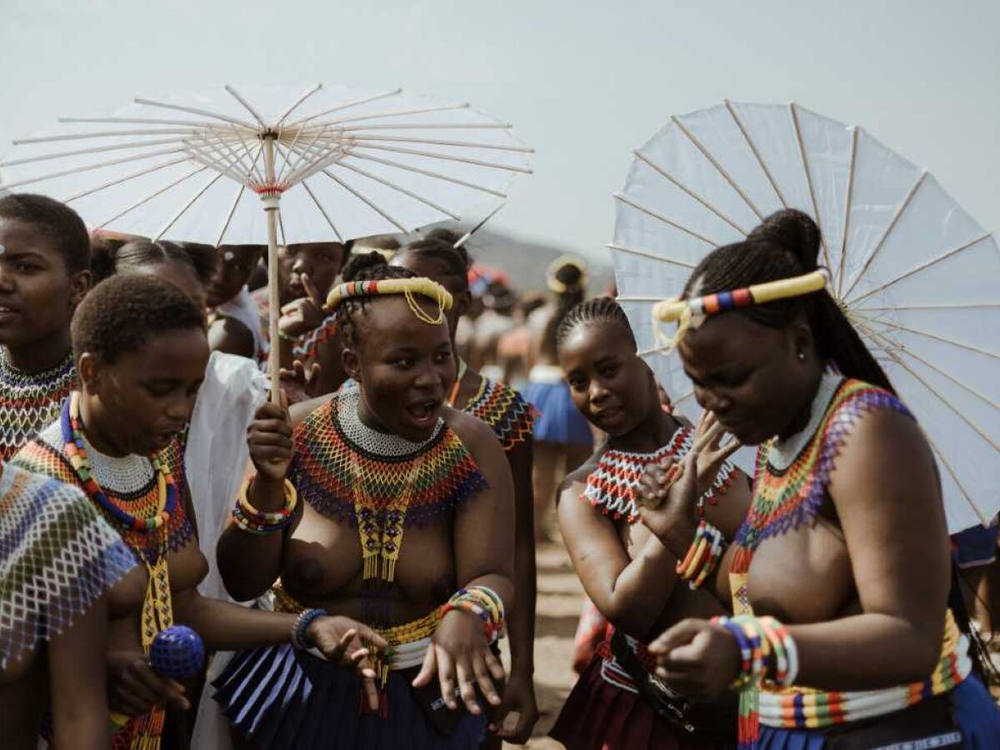
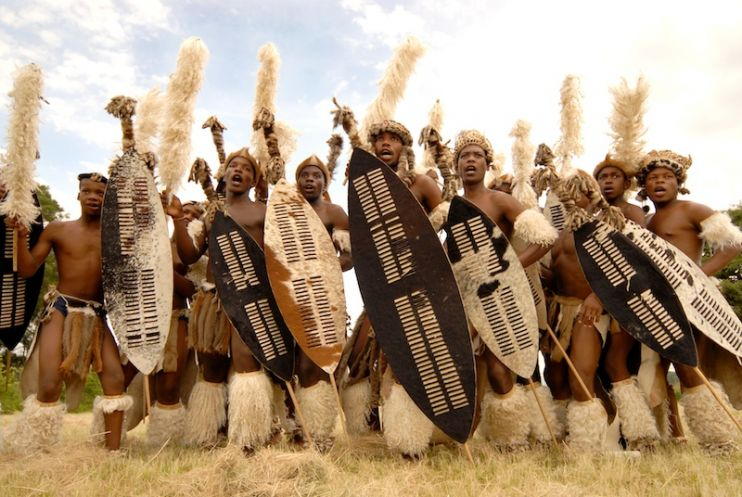
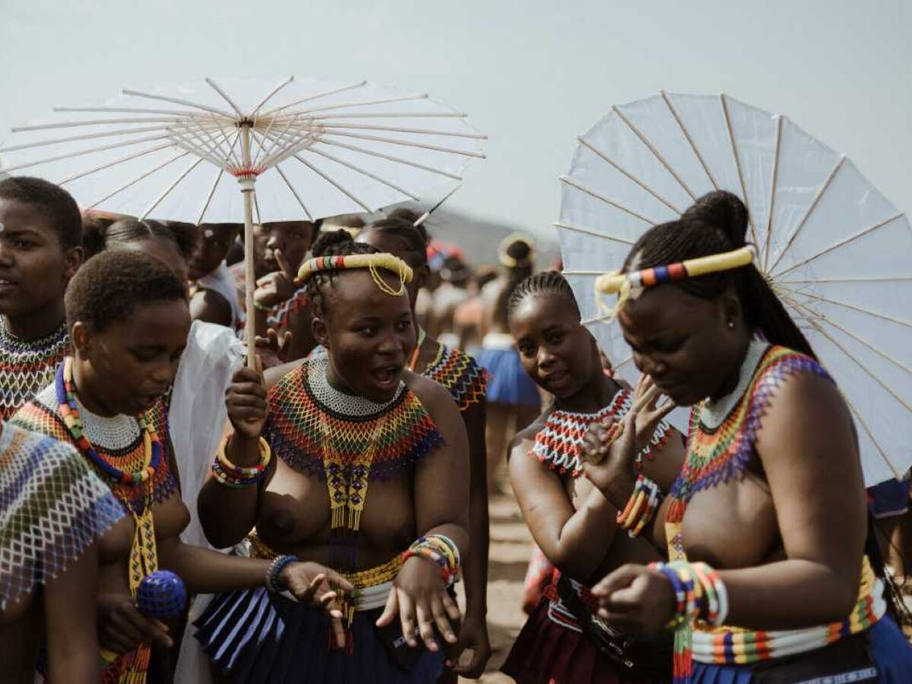
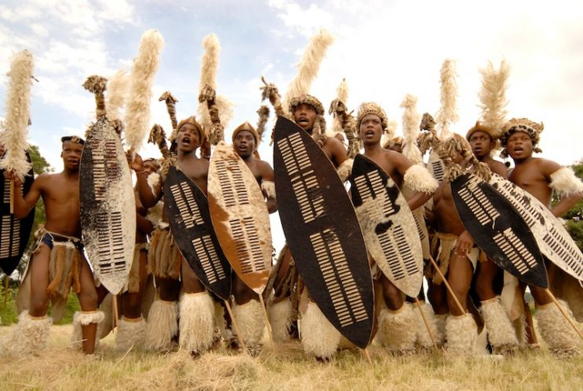
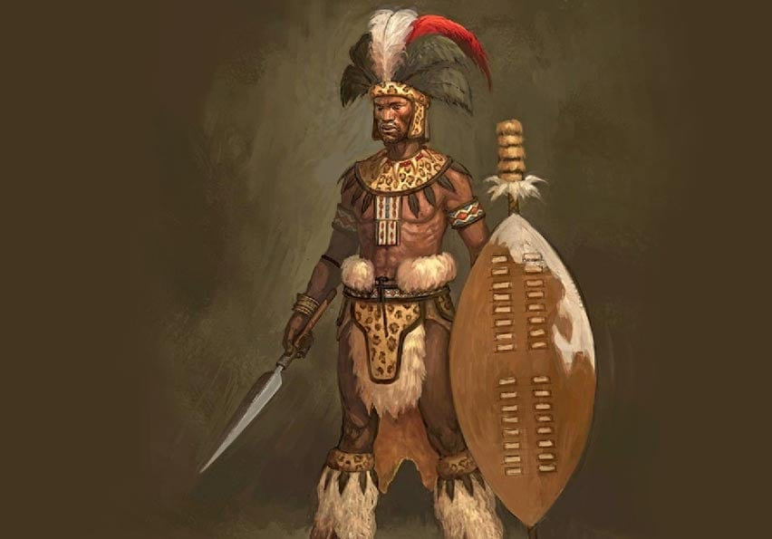
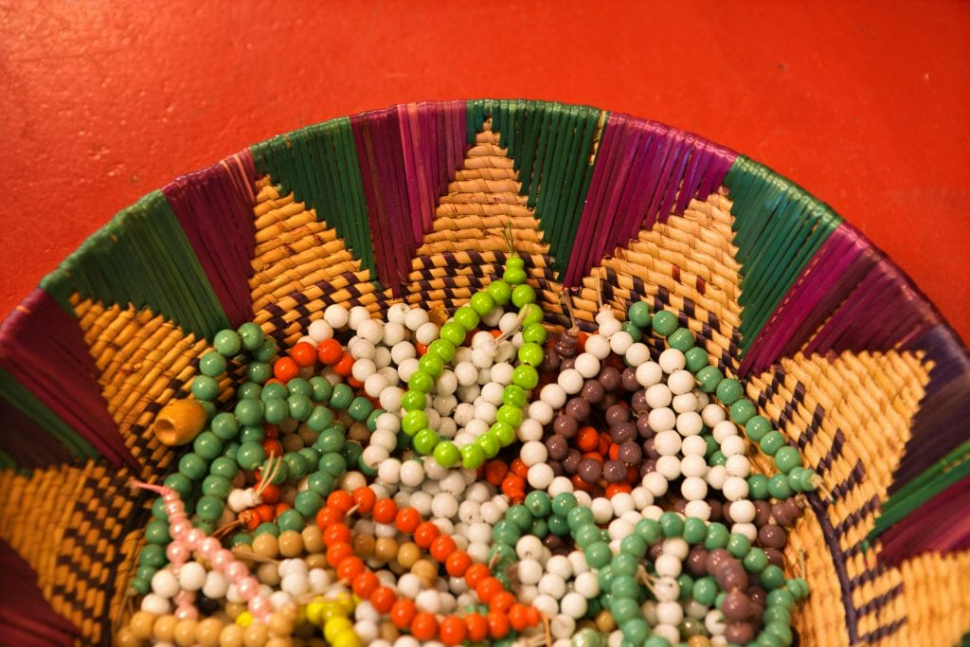

_resized_resized_resized_resized.png)
 




História e Origens:
Os Zulus foi um clã fundado por Zulu kaNtombhela. Sendo assim, quando Chaka, em 1816, se tornou chefe da tribo, as ordens foram para que o poder se expandisse para outras tribos e clãs.

Costumes
Um dos costumes mais cultivados pelos Zulus está no fato de terem uma refeição e todas as pessoas comerem no mesmo prato. O costume simboliza amizade, partilha e reciprocidade entre os povos da tribo.
Arte e Religião
A miçanga é um artefato muito usado pelos Zulus. Com elas produzem desde vestimentas, artesanato e até a utilizam como forma de escrita.